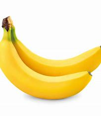

appel
Een gemiddelde middelgrote appel (ongeveer 182 gram) bevat ongeveer 95 kcal Het aantal calorieën in een appel kan variëren afhankelijk van het type en de grootte van de appel. Appels zijn een uitstekende bron van vitamine C en voedingsvezels.

Een gemiddelde banaan (ongeveer 120 gram) bevat ongeveer 105 kcal. Bananen zijn een goede bron van kalium, vitamine C en vitamine B6.
Een gemiddelde middelgrote appel (ongeveer 182 gram) bevat ongeveer 95 kcal Het aantal calorieën in een appel kan variëren afhankelijk van het type en de grootte van de appel. Appels zijn een uitstekende bron van vitamine C en voedingsvezels.
Spinazie is een groene bladgroente die bekend staat om zijn voedingswaarde en veelzijdigheid in de keuken. Spinazie (rauw, per 100 gram): Calorieën: Ongeveer 23 kcal
Spruitjes zijn kleine koolsoorten die tot de kruisbloemige familie behoren en bekendstaan om hun unieke smaak.Ze zijn een uitstekende bron van vitamine C, vitamine K en vitamine A.spruitjes (rauw, per 100 gram): Calorieën: Ongeveer 43 kcal